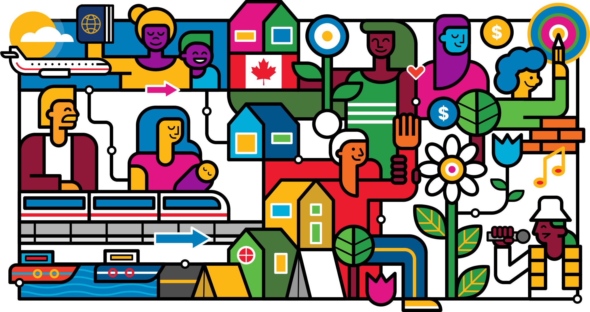
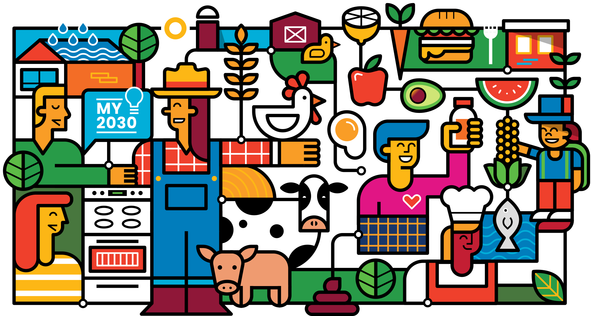
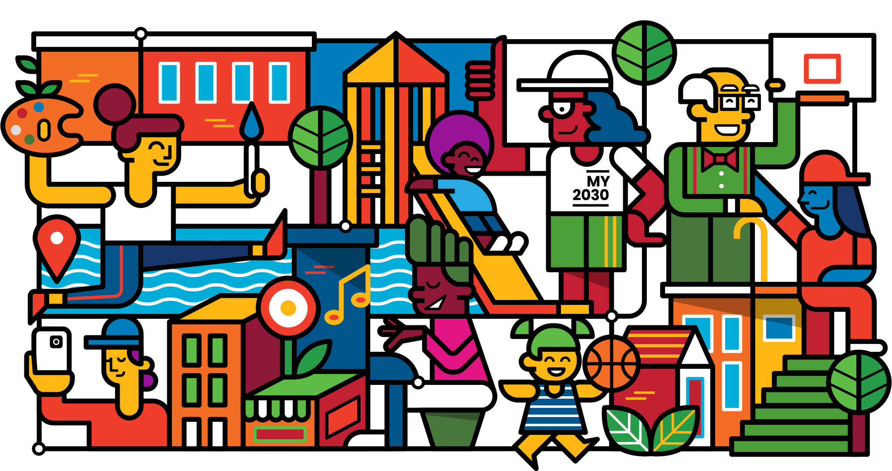
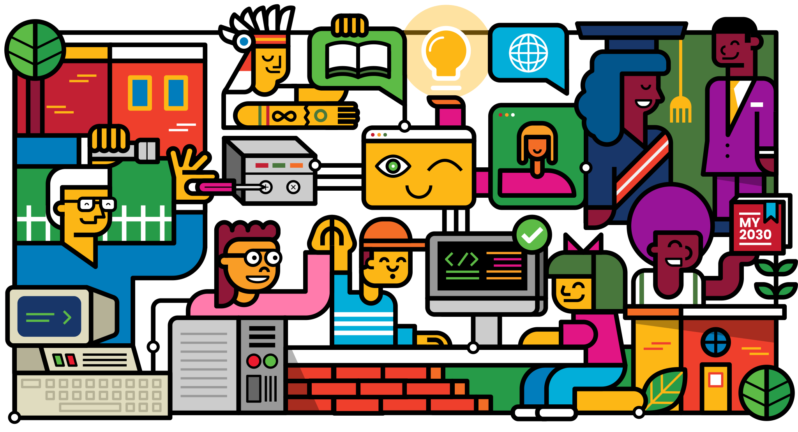
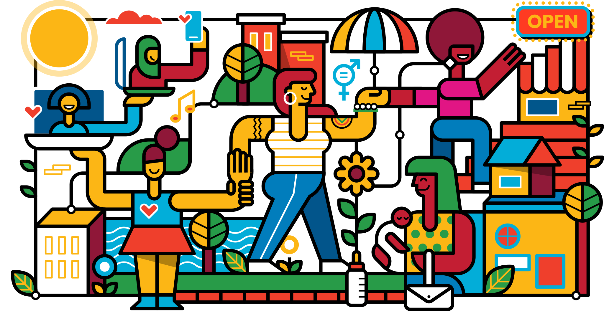
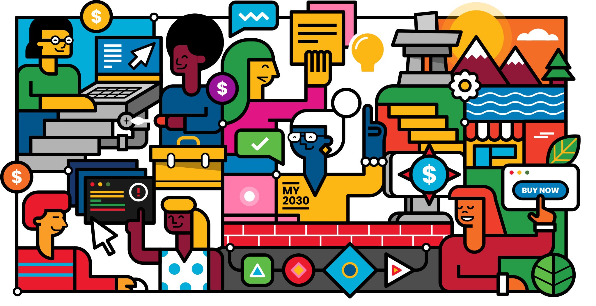
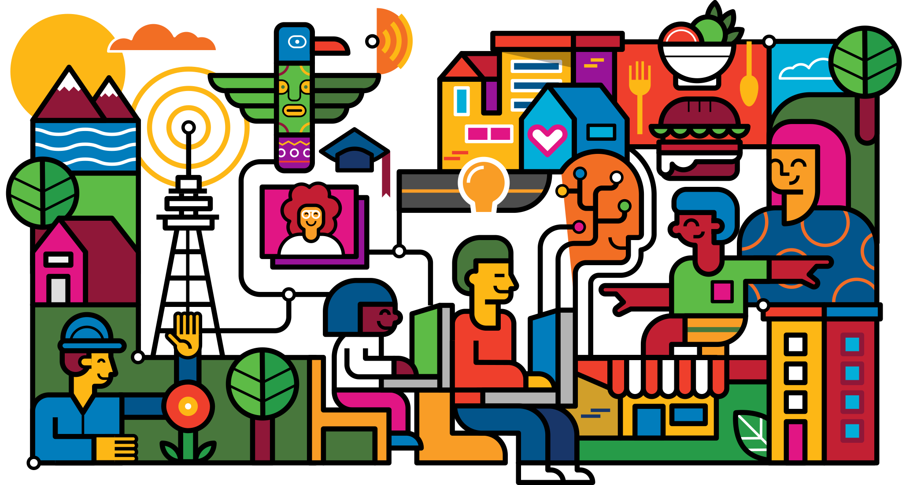
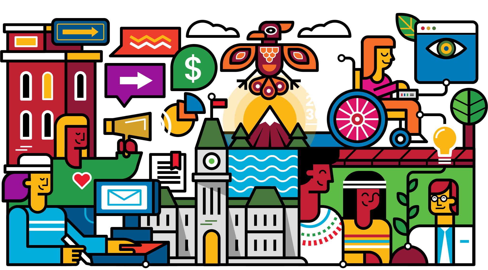
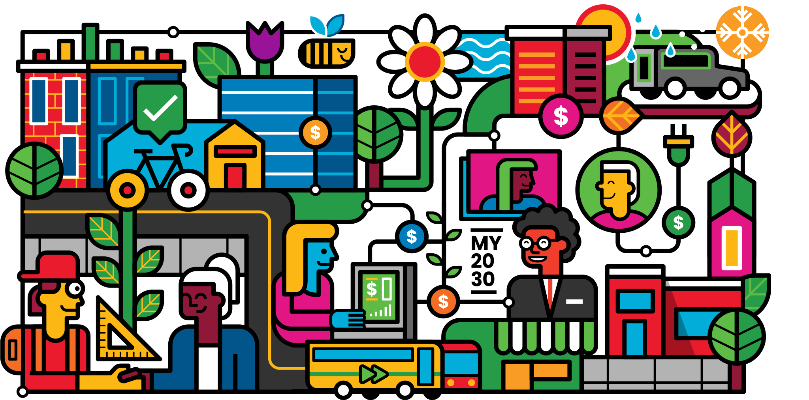

The #My2030
art collection
We illustrated 10 of the 17 SDGs to give a glimpse of the work being done in communities across Canada to achieve these goals. The projects that are depicted in each piece of art were chosen through both public and selection committee votes from Canada’s Top 100 Recovery Projects.
SDG 1No Poverty
+ View artwork
The artwork designed by Loogart represents four community solutions advancing no poverty by 2030 in a post-pandemic world: Matthew House, A Better Tent City, Good to be Good Women’s Relief Fund, SKETCH. Funded by the Government of Canada’s Sustainable Development Goals Program.
L'œuvre de Loogart représente cinq solutions communautaires contribuant à pas de pauvreté d'ici 2030 dans un monde post-pandémique : Matthew House, A Better Tent City, Good to be Good Women’s Relief Fund, SKETCH. Financé par le Programme des objectifs de développement durable du Gouvernement du Canada.
SDG 2Zero Hunger
+ View artwork
The artwork designed by Loogart represents four community solutions advancing zero hunger by 2030 in a post-pandemic world: The Station Food Hub, Symbiosis Centre, Grow Back Better and Food for Thought. Funded by the Government of Canada’s Sustainable Development Goals Program.
L'œuvre de Loogart représente quatre solutions communautaires pour éliminer la faim d'ici 2030 dans un monde post-pandémique : The Station Food Hub, Symbiosis Centre, Grow Back Better and Food for Thought. Financé par le Programme des objectifs de développement durable du Gouvernement du Canada.
SDG 3Good Health and Well-being
+ View artwork
The artwork designed by Loogart represents five community solutions advancing quality education by 2030 in a post-pandemic world: Thrive Outside, Brighter Day, Park People Community Resilience, BeSafe mobile app and Artscape. Funded by the Government of Canada’s Sustainable Development Goals Program.
L'œuvre de Loogart représente cinq solutions communautaires contribuant à une éducation de qualité d'ici 2030 dans un monde post-pandémique : Thrive Outside, Brighter Day, Park People Community Resilience, BeSafe mobile app and Artscape. Financé par le Programme des objectifs de développement durable du Gouvernement du Canada.
SDG 4Quality Education
+ View artwork
The artwork designed by Loogart represents four community solutions advancing quality education by 2030 in a post-pandemic world: re//BUILD.IT, Kids Code, Connected North and Black Diplomats Academy. Funded by the Government of Canada’s Sustainable Development Goals Program.
L'œuvre de Loogart représente quatre solutions communautaires contribuant à une éducation de qualité d'ici 2030 dans un monde post-pandémique : re//BUILD.IT, Kids Code, Connected North and Black Diplomats Academy. Financé par le Programme des objectifs de développement durable du Gouvernement du Canada.
SDG 5Gender Equality
+ View artwork
The artwork designed by Loogart represents five community solutions advancing gender equality by 2030 in a post-pandemic world: Babies, Business and Breakfast, #BuildUpWomen Series, Colours of Mama, Feminist Economic Recovery Plan, and Parkdale Centre for Innovation. Funded by the Government of Canada’s Sustainable Development Goals Program.
L'œuvre de Loogart représente cinq solutions communautaires faisant progresser l'égalité des sexes d'ici 2030 dans un monde post-pandémique : Babies, Business and Breakfast, #BuildUpWomen Series, Colours of Mama, Feminist Economic Recovery Plan, et Parkdale Centre for Innovation. Financé par le Programme des objectifs de développement durable du Gouvernement du Canada.
SDG 8Decent Work and Economic Growth
+ View artwork
The artwork designed by Loogart represents five community solutions advancing decent work and economic growth by 2030 in a post-pandemic world: Inclusive Cyber Talent, #ImmigrantsWork, Economic Renewal Lab, Financial relief navigator, Yukon PIVOT. Funded by the Government of Canada’s Sustainable Development Goals Program.
L'œuvre de Loogart représente cinq solutions communautaires contribuant au travel décent et la croissance économique d'ici 2030 dans un monde post-pandémique : Inclusive Cyber Talent, #ImmigrantsWork, Economic Renewal Lab, Financial relief navigator, Yukon PIVOT. Financé par le Programme des objectifs de développement durable du Gouvernement du Canada.
SDG 9Industry, Innovation and Infrastructure
+ View artwork
The artwork designed by Loogart represents five community solutions advancing industry, innovation and infrastructure by 2030 in a post-pandemic world: Internet for Nova Scotia, Pathways to Education, Innovators Academy, Chalmers - Ample Labs, Troop. Funded by the Government of Canada’s Sustainable Development Goals Program.
L'œuvre de Loogart représente cinq solutions communautaires contribuant à l’industrie, l’innovation et l’infrastructure d'ici 2030 dans un monde post-pandémique : Internet for Nova Scotia, Pathways to Education, Innovators Academy, Chalmers - Ample Labs, Troop. Financé par le Programme des objectifs de développement durable du Gouvernement du Canada.
SDG 10Reduced Inequalities
+ View artwork
The artwork designed by Loogart represents four community solutions to reduce inequalities by 2030 in a post-pandemic world: Young Ontarians United, CREation Community Support, Makers Making Change and CHASM Incubator. Funded by the Government of Canada’s Sustainable Development Goals Program.
L'œuvre de Loogart représente quatre solutions communautaires contribuant à réduire les inégalités d'ici 2030 dans un monde post-pandémique : Young Ontarians United, CREation Community Support, Makers Making Change and CHASM Incubator. Financé par le Programme des objectifs de développement durable du Gouvernement du Canada.
SDG 11Sustainable Cities and Communities
+ View artwork
The artwork designed by Loogart represents five community solutions advancing sustainable cities and communities by 2030 in a post-pandemic world: CityStudio, Connected Communities Work, British Columbia Social Procurement Initiative, Green Economy Hub, project Arrow. Funded by the Government of Canada’s Sustainable Development Goals Program.
L'œuvre de Loogart représente cinq solutions communautaires contribuant à créer des villes et communautés durables d'ici 2030 dans un monde post-pandémique : CityStudio, Connected Communities Work, British Columbia Social Procurement Initiative, Green Economy Hub, project Arrow. Financé par le Programme des objectifs de développement durable du Gouvernement du Canada.
SDG 13Climate Action
+ View artwork

The artwork designed by Loogart represents five community solutions advancing climate action by 2030 in a post-pandemic world: Iron Earth, Genecis, Open Ocen Robotics, Fuel for Reconciliation and the Butterfly Project. Funded by the Government of Canada’s Sustainable Development Goals Program.
L'œuvre de Loogart représente cinq solutions communautaires pour lutter contre le changement climatique et ses impacts d'ici 2030 dans un monde post-pandémique : Iron Earth, Genecis, Open Ocen Robotics, Fuel for Reconciliation and the Butterfly Project. Financé par le Programme des objectifs de développement durable du Gouvernement du Canada.